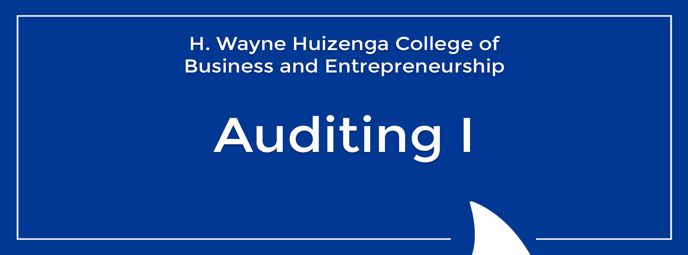
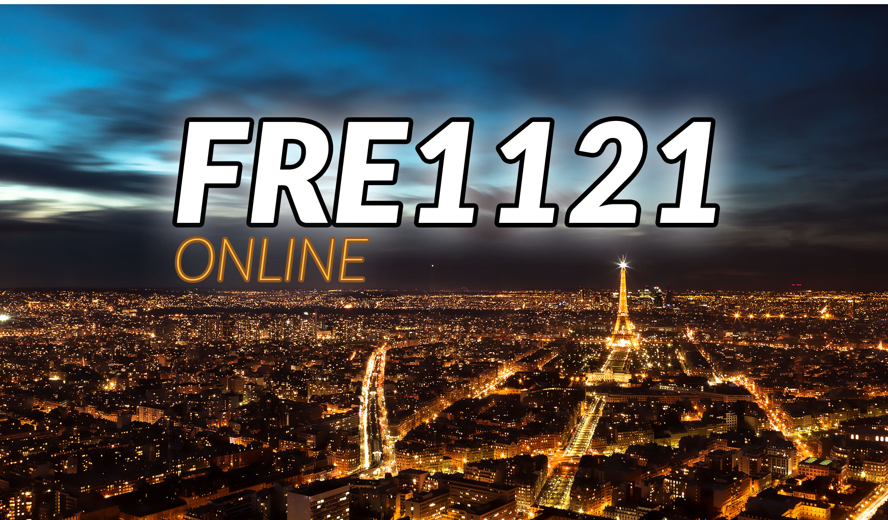

Auditing I
Course details and selected work will be added in a future update.
Selected portfolio

Course details and selected work will be added in a future update.

 New York University2018
New York University2018Recreating an interactive, team-centered classroom experience online.
New York University & edX2019–2020Parallel NYU and edX experiences built for different audiences and platforms.

A complete online course built from curriculum structure through media and assessment.